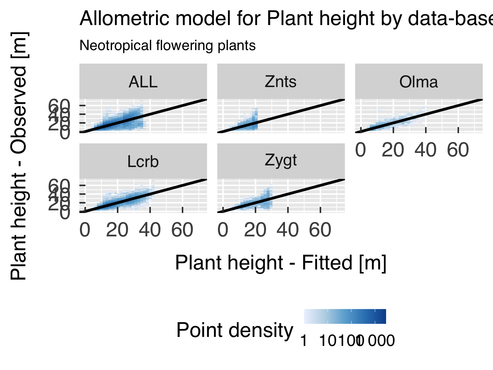
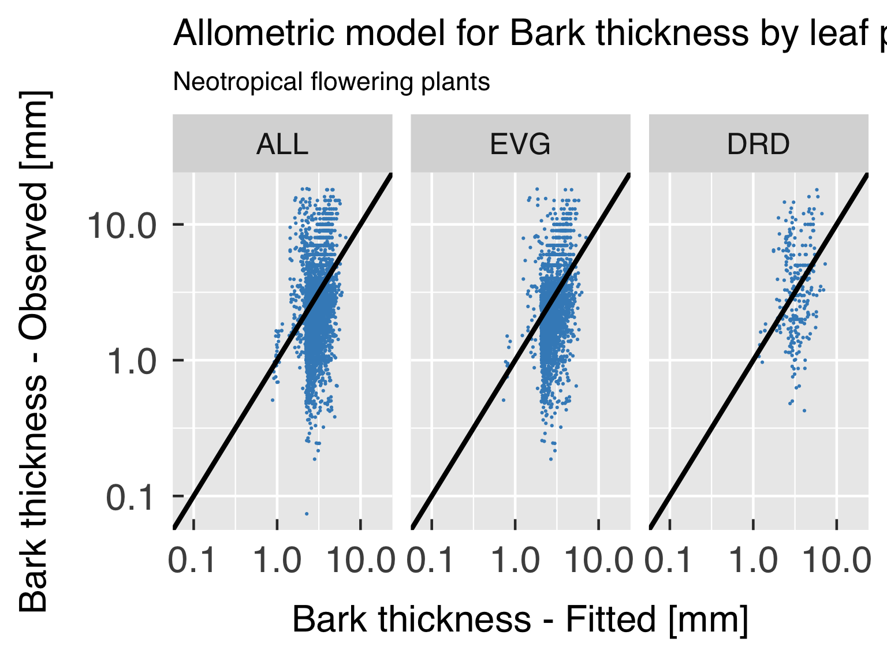
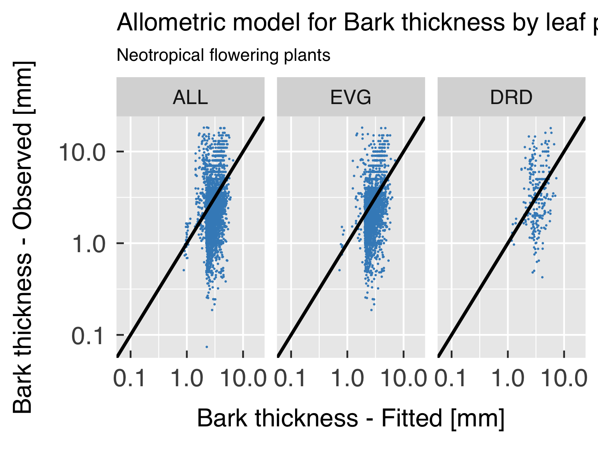
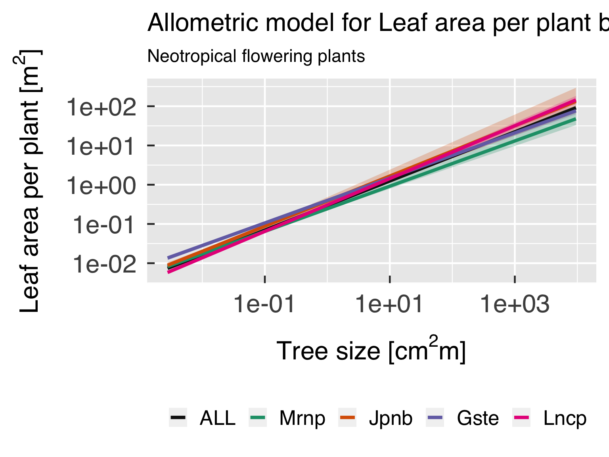
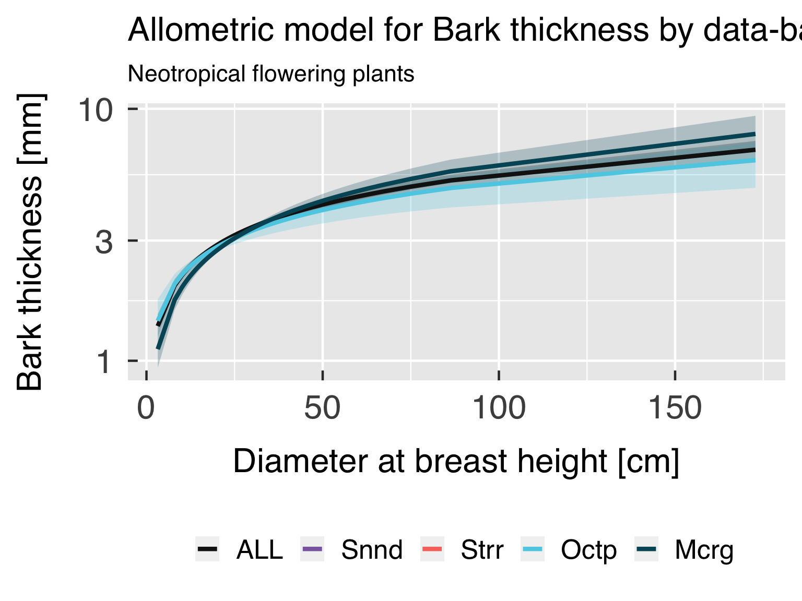
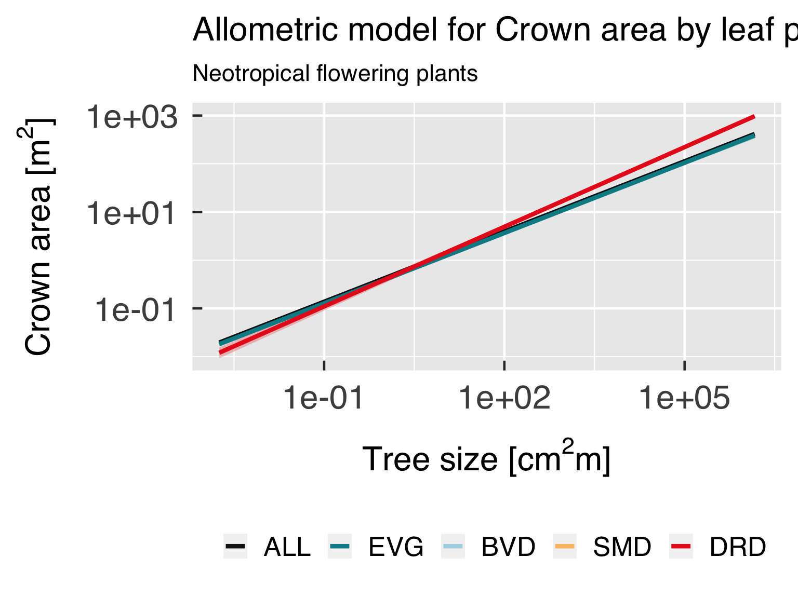

Introduction.
This script seeks to establish allometric relationships for different
plant functional groups.
Set paths and file names for input and output.
- home_path. The user home path.
- main_path. Main working directory
- util_path. The path with the additional utility
scripts (the full path of
RUtils).
- plot_path. The main output path for the simulation
plots.
- rdata_path. Output path for R objects (so we can
use it for comparisons.)
- br_state_shp. Shapefile with Brazilian states.
# Set useful paths and file names
home_path = path.expand("~")
main_path = file.path(home_path,"Data","TraitAllom_Workflow")
util_path = file.path(main_path,"RUtils")
plot_path = file.path(main_path,"Figures")
rdata_path = file.path(main_path,"RData")
br_state_shp = file.path(home_path,"Shared","southam_map","brazil_states.shp")
The following block defines some settings that were used for defining
clusters and standardised major axes. This is used to reload the correct
data sets and to generate unique labels for the allometry objects.
xsma_TraitID. Variable to be used as the X axis
of the SMA fit for most traits. This must be a trait ID that matches one
of the traits listed in try_trait, defined in the trait
file list (trait_file) and loaded from file
rdata_TidyTRY.
use_lifeclass. Which life-form/phylogenetic
level was used to subset the original data set. Options are:
"FlowerTrees". Trees, classes Magnoliopsida and
Liliopsida (flowering plants)."Shrubs". Shrubs"Grasses". Grasses/Herbs"FlowerPlants". All life forms, classes Magnoliopsida
and Liliopsida"Pinopsida". Conifers (class Pinopsida), all life
forms"SeedPlants". Seed plants, all life forms: classes
Cycadopsida, Ginkgoopsida, Gnetopsida, Liliopsida, Magnoliopsida and
Pinopsida."Plantae". All plants
use_realm. Which realm was used to subset the
original data set. Current options are:
"NeoTropical". South and Central America"PanTropical". All continents.
# Variable to use as X axis for trait SMA analyses?
xsma_TraitID = c(wood_dens=4L,SLA=3117L,leaf_turnover=12L,leaf_f_punct=2L)[2L]
# Life-form/phylogenetic level to use for SMA analyses.
use_lifeclass = c("FlowerTrees","Shrubs","Grasses","FlowerPlants","Pinopsida","SeedPlants","Plantae")[4L]
# Realm to use for SMA analyses.
use_realm = c("NeoTropical","PanTropical")[1L]
# Taxonomic level of detail for SMA analyses. This is used to retrieve the correct "Tidy TRY" data set
# with the cluster assignment. Allometric models are always developed from individual observations.
fit_taxon = c("Individual","Species","Genus")[2L]
Settings for reloading or rerunning multiple steps of this script.
These are all logical variables, with TRUE meaning to
reload previous calculations, and FALSE meaning to
calculate the step again. If the RData file is not found, these
variables will be ignored.
- reload_input_allom. Reload the input data for
fitting the allometric models?
- reload_height_allom. Reload the height-DBH
models?
- reload_agb_allom. Reload above-ground biomass
models?
- reload_bleaf_allom. Reload leaf biomass
models?
- reload_leaf_area_allom. Reload individual leaf area
models?
- reload_crown_area_allom. Reload individual crown
area models?
- reload_crown_depth_allom. Reload crown depth
models?
- reload_bark_thick_allom. Reload bark thickness
models?
reload_input_allom = c(FALSE,TRUE)[2L] # Reload the input data for fitting the allometric models?
reload_height_allom = c(FALSE,TRUE)[2L] # Reload the height-DBH models?
reload_agb_allom = c(FALSE,TRUE)[2L] # Reload above-ground biomass models?
reload_bleaf_allom = c(FALSE,TRUE)[2L] # Reload leaf biomass models?
reload_leaf_area_allom = c(FALSE,TRUE)[2L] # Reload individual leaf area models?
reload_crown_area_allom = c(FALSE,TRUE)[2L] # Reload individual crown area models?
reload_crown_depth_allom = c(FALSE,TRUE)[2L] # Reload crown depth models?
reload_bark_thick_allom = c(FALSE,TRUE)[2L] # Reload bark thickness models?
The following block defines some settings for model fitting.
- CntAllomMin. Minimum number of valid points to
consider for maps.
- AllomConfInt. Confidence interval for allometric
equations.
- AllomMaxItGain. Maximum number of iterations for
calling the main optimiser for seeking a better maximum using the
previous optimised set of parameters. This sometimes helps improving the
model, but it typically stabilises after a handful of iterations (about
5).
- AllomMaxItOptim. Maximum number of iterations
before giving up optimising the model. This is actually what controls
the search for the optimal point, and should be relatively high
(1000–5000) as sometimes the initial guess is too far from the actual
optimal.
- AllomTolGain. Relative tolerance for successive
calls of the main optimiser. Values of the order of \(10^{-5}\) are typically sufficient.
- AllomTolOptim. Relative tolerance for model
fitting. This controls the error tolerance of the optimiser itself and
should be stricter (\(10^{-7}\)) or
less).
- UseFixedModel. If
TRUE, use global
observations to define the best model formulation (equation type), and
use this one for all classes and categories. If FALSE, use
the test the best formulation for each class and category within
class.
- AllomCntPred. Number of points spanning the range
of predictors for fitted curve.
- AllomQuantPred. Logical flag: should the values
span evenly by quantiles (TRUE) or just linearly (FALSE).
CntAllomMin = 30L # Minimum number of points for fitting allometric models.
AllomConfInt = 0.95 # Confidence interval for allometric model fittings.
# Settings for non-linear heteroscedastic model fitting.
AllomMaxItGain = 4L # Maximum number of iterations for calling the optimiser
AllomMaxItOptim = 1000L # Maximum number of iterations for finding the optimal point
AllomTolGain = 1.e-3 # Tolerance for accepting convergence of multiple optimiser calls.
AllomTolOptim = 1.e-8 # Tolerance for finding the optimum within each optimiser call.
# Settings for predicting values.
UseFixedModel = TRUE # Use the same functional form (model) for each class category?
AllomCntPred = 101L # Number of points spanning the range of predictor for fitted curve.
AllomQuantPred = TRUE # Span predictor evenly across quantiles (TRUE) or linearly (FALSE)
AllomCntBoot = 1024L # Number of times for bootstrapping for generating confidence bands.
Set up some flags to either plot (TRUE) or skip
(FALSE) groups of plots.
- plot_allom_scatter. Plot scatter plot comparing
observations with predicted values?
- plot_allom_fun. Plot functional form of models as
function of size?
plot_allom_scatter = c(FALSE,TRUE)[2L] # Plot allometry scatter plot ? (TRUE|FALSE)
plot_allom_fun = c(FALSE,TRUE)[2L] # Plot allometry function? (TRUE|FALSE)
General plot options for ggplot.
gg_device = c("pdf") # Output devices to use (Check ggsave for acceptable formats)
gg_depth = 300 # Plot resolution (dpi)
gg_ptsz = 24 # Font size
gg_width = 11.0 # Plot width for non-map plots (units below)
gg_height = 8.5 # Plot height for non-map plots (units below)
gg_units = "in" # Units for plot size
gg_screen = TRUE # Show plots on screen as well?
gg_tfmt = "%Y" # Format for time
gg_ncolours = 129 # Number of node colours for heat maps.
gg_fleg = 1./6. # Fraction of plotting area dedicated for legend
ndevice = length(gg_device)
Options for allometry plots:
- CntDensThresh. Number of points above which we
select density plots instead of scatter plots. Note: if the plot uses
logarithmic scale in either axis, the code will force scatter
plots.
- CntDensBin. Number of bins for 2-D density
plots.
- DensPalette. Colour palette for density bins.
- DensReverse. Should we use the reverse palette?
(TRUE | FALSE)
- DensCntColour. Number of colours to use in the
colour ramp.
- DensTrans. Variable transformation for density
plots.
- DensRange. Range for the binned plots, in case a
fixed range is sought. This is a vector of 2 (minimum and maximum). If
you want to use the default values, set them to
NA_real_.
For completely unbounded values, set both values to
NA_real_.
- PointColour. Point colour when using scatter plots
instead of density.
- PointShape. Point shape when using scatter plots
instead of density.
- PointSize. Point size when using scatter plots
instead of density.
Scales for x and y axes. Options are "identity"
(linear), "log" (logarithmic, useful for non-linear ranges
that are always positive), "neglog" (negative logarithm of
negative number, i.e. \(-\log{\left(-x\right)}\), useful for
non-linear scales that are always negative), "sqrt" (square
root, useful for non-linear ranges that must include zero) and
"cbrt" (cube root, useful for non-linear ranges that can be
positive or negative).
- xTransAllom. Vector with transformation for the x
axis, one for each X predictor (DBH, Height, Size, WDSize, LMSize)
- xTransAllom. Vector with transformation for the y
axis, one for each allometric relationship (Height, AGB, BLeaf,
LeafArea, CrownArea, CrownDepth, BarkThick)
CntDensThresh = 1000L
CntDensBin = 40L
DensPalette = "Blues"
DensReverse = FALSE
DensCntColour = 200L
DensTrans = "log10"
DensRange = c(1L,NA_real_)
PointColour = "#418CC3" # Colour for points (when not using density).
PointShape = 16L # Point shape format (when not using density).
PointSize = 0.75 # Point size (when not using density).
xTransAllom = c( DBH = "identity", Height = "identity", Size = "log"
, WDSize = "log" , LMSize = "log" )
yTransAllom = c( Height = "identity", AGB = "log" , BLeaf = "log"
, LeafArea = "log" , CrownArea = "log" , CrownDepth = "identity"
, BarkThick = "log" )
Main script
Note: Code changes beyond this point are only needed
if you are developing the notebook.
Initial settings.
First, we load the list of host land model variables that we may
consider for the comparison.
source(file.path(util_path,"load.everything.r"),chdir=TRUE)
Load all countries and Brazilian states to include in the plot.
# Load countries and Brazilian states
all_countries = sf::st_as_sf(maps::map("world2",plot=FALSE,fill=TRUE,wrap=c(-180,180)))
br_states = sf::st_as_sf(st_read(br_state_shp))
We also list all colour palettes from packages
RColorBrewer and viridis. This will be useful
when deciding the colour ramps.
# List of palettes in package RColorBrewer and viridis
BrewerPalInfo = rownames(RColorBrewer::brewer.pal.info)
ViridisPalInfo = as.character(lsf.str("package:viridis"))
ViridisPalInfo = ViridisPalInfo[! grepl(pattern="^scale_",x=ViridisPalInfo)]
Load the harmonised trait data set, stored in file
rdata_TidyTRY. This is the output of script
TidyTRY.Rmd so make sure to run that pre-processing
first.
# Set subset of TRY entries.
use_suffix = paste(use_realm,use_lifeclass ,sep="_")
# File name with the tidy data set of individual trait observations.
rdata_TidyTRY = file.path(rdata_path,paste0("TidyTRY_" ,use_suffix,".RData"))
# Check that the file exists and load it.
if (file.exists(rdata_TidyTRY)){
# Load data.
cat0(" + Load data from file: ",basename(rdata_TidyTRY),".")
dummy = load(rdata_TidyTRY)
}else{
# File not found, stop the script
cat0(" + File ",basename(rdata_TidyTRY)," not found!")
cat0(" This script requires pre-processing and subsetting TRY observations.")
cat0(" - Run script \"TidyTRY.Rmd\" before running this script, and set: ")
cat0(" use_realm = \"",use_realm ,"\"")
cat0(" use_lifeclass = \"",use_lifeclass,"\"")
cat0(" in the TidyTRY preamble.")
stop(" RData object not found.")
}#end if (file.exists(rdata_TidyTRY))
# Find the local trait name consistent with the TidyTRY object. For most traits, we use
# the trait ID, however for leaf texture and xylem loss of conductivity, we use the names
# because the same ID is split into multiple variables.
if (xsma_TraitID %in% c(2L,719L,3479L)){
xsma_idx = match(names(xsma_TraitID),try_trait$Name)
}else{
xsma_idx = match(xsma_TraitID,try_trait$TraitID)
}#end if (xsma_TraitID %in% c(2L,719L,3479L))
xsma_name = try_trait$Name[xsma_idx]
# Build suffix for model fittings.
trait_suffix = paste(use_suffix,fit_taxon,xsma_name ,sep="_")
rdata_TidyCluster = file.path(rdata_path,paste0("TidyCluster_",trait_suffix,".RData"))
# Check that the file exists and load it.
if (file.exists(rdata_TidyCluster)){
# Load data.
cat0(" + Load data from file: ",basename(rdata_TidyCluster),".")
dummy = load(rdata_TidyCluster)
}else{
# File not found, stop the script
cat0(" + File ",basename(rdata_TidyCluster)," not found!")
cat0(" This script requires pre-processing, subsetting TRY observations, and a cluster analysis.")
cat0(" - Run scripts \"TidyTRY.Rmd\" and \"TRYTradeOffs.Rmd\" in this orde before running this script, and set: ")
cat0(" use_realm = \"",use_realm ,"\"")
cat0(" use_lifeclass = \"",use_lifeclass,"\"")
cat0(" xsma_name = \"",xsma_name ,"\"")
cat0(" in the \"TidyTRY.Rmd\" and \"TRYTradeOffs.Rmd\" preambles.")
stop(" RData object not found.")
}#end if (file.exists(rdata_TidyCluster))
Define files and paths for input and output. We also create the
output paths.
# Build output directory for trait, allometry, and photosynthesis fits.
allom_path = file.path(plot_path,paste0("Allom_",trait_suffix))
# Build RData object file names for the allometric models.
rdata_input_allom = file.path(rdata_path,paste0("AllomInput" ,use_suffix,".RData"))
rdata_height_allom = file.path(rdata_path,paste0("AllomFit_Height" ,use_suffix,".RData"))
rdata_agb_allom = file.path(rdata_path,paste0("AllomFit_AGB" ,use_suffix,".RData"))
rdata_bleaf_allom = file.path(rdata_path,paste0("AllomFit_BLeaf" ,use_suffix,".RData"))
rdata_leaf_area_allom = file.path(rdata_path,paste0("AllomFit_LeafArea" ,use_suffix,".RData"))
rdata_crown_area_allom = file.path(rdata_path,paste0("AllomFit_CrownArea" ,use_suffix,".RData"))
rdata_crown_depth_allom = file.path(rdata_path,paste0("AllomFit_CrownDepth",use_suffix,".RData"))
rdata_bark_thick_allom = file.path(rdata_path,paste0("AllomFit_BarkThick" ,use_suffix,".RData"))
# Make sure directories are set.
dummy = dir.create(path=rdata_path ,showWarnings=FALSE,recursive=TRUE)
dummy = dir.create(path=allom_path ,showWarnings=FALSE,recursive=TRUE)
Define the labels for titles:
# Label for life-form/phylogenetic level
LabelLife = switch( use_lifeclass
, FlowerTrees = "flowering trees"
, Shrubs = "shrubs"
, Grasses = "grasses"
, FlowerPlants = "flowering plants"
, Pinopsida = "conifers"
, SeedPlants = "seed plants"
, Plantae = "plants"
, stop("Unrecognised life-form/phylogenetic level.")
)#end switch
# Label for floristic realm
LabelRealm = switch( use_realm
, NeoTropical = "Neotropical"
, PanTropical = "Pantropical"
, stop("Unrecognised realm.")
)#end switch
# Build sub-title
LabelSubtitle = paste0(LabelRealm," ",LabelLife)
Find confidence quantiles based on the confidence range.
# Find lower and upper confidence bands
AllomConfLwr = 0.5 - 0.5 * AllomConfInt
AllomConfUpr = 0.5 + 0.5 * AllomConfInt
# Find the significance level to consider allometric models significant
AllomAlpha = 1. - AllomConfInt
For some plots, we use a square image so it looks nicer. Define the
size as the average between height and width.
# Find size for square plots
gg_square = sqrt(gg_width*gg_height)
Define the tibble that helps fitting and plotting allometric models
by category
# Find the number of sub-classes to test the model
CategTmp = CategExtra %>%
filter( ( (XYUse %in% "Colour") | (TraitID %in% 0L) ) & (! duplicated(Class))) %>%
mutate( TraitName = ifelse( test = TraitID %in% 0L
, yes = "Cluster"
, no = try_trait$Name[match(TraitID,try_trait$TraitID)]
)#end ifelse
)#end mutate
CategAll = CategExtra %>%
filter( is.na(TraitID) & (Class %in% "ALL"))
CategAllom = tibble( TraitID = c(CategAll$TraitID,CategTmp$TraitID)
, Name = c(CategAll$Class,CategTmp$Class)
, TraitClass = ifelse( test = TraitID %gt% 0L
, yes = try_trait$Name[match(TraitID,try_trait$TraitID)]
, no = ifelse(test=TraitID %eq% 0L, yes="Cluster",no="All")
)#end ifelse
, DescClass = ifelse( test = TraitID %gt% 0L
, yes = try_trait$Desc[match(TraitID,try_trait$TraitID)]
, no = ifelse( test = TraitID %eq% 0L
, yes = "Data-based cluster"
, no = "All data"
)#end ifelse
)#end ifelse
, Colour = c(CategAll$Colour,CategTmp$Colour)
, Symbol = c(CategAll$Symbol,CategTmp$Symbol)
, XYUse = c(CategAll$XYUse ,CategTmp$XYUse )
)#end tibble
CntCategAllom = nrow(CategAllom)
Prepare data for model fitting
Here we will generate tibble AllomTRY, which will be the
based on TidyTRY, but with the following differences:
- Wood density (\(\rho_{w}\)) and
specific leaf area (\(\mathrm{SLA}\)),
when available, will be gap filled. If the species has a value
associated with the trait, we use that value, otherwise, we randomly
sample from either the cluster or using the global distribution of
values.
- New variable leaf mass per area (\(\mathrm{LMA}\)) as the reciprocal of \(\mathrm{SLA}\). This may be useful for
defining allometric models.
- We will define three new variables that are derived from diameter at
breast height (\(\mathrm{DBH}\)) and
plant height (\(h\)), as well as \(\rho_w\) or \(\mathrm{LMA}\) which are often used in
allometric models.
- Size - This is defined as \(\mathrm{DBH}^2
\, h\)
- WDSize - This is defined as \(\rho_w \,
\mathrm{Size}\)
- LMSize - This is defined as \(\mathrm{LMA}
\, \mathrm{Size}\)
if (reload_input_allom && file.exists(rdata_input_allom)){
# Load existing data.
cat0(" + Load input allometry data from ",basename(rdata_input_allom),".")
dummy = load(rdata_input_allom)
}else{
cat0(" + Create input data set for training allometric models.")
# Create tibble AllomTRY based on TidyTRY
AllomTRY = TidyTRY
cat0(" + Create template for appending new traits as needed.")
try_template = try_trait[1L,,drop=FALSE] %>%
mutate( across(where(is.character), ~ NA_character_)
, across(where(is.integer ), ~ NA_integer_ )
, across(where(is.double ), ~ NA_real_ )
, across(where(is.logical ), ~ FALSE )
, across(matches("Type") , ~ "numeric" )
, across(matches("Add" ) , ~ 0. )
, across(matches("Mult" ) , ~ 1. )
, across(matches("Power") , ~ 1. ) )
# Make sure that the main predictors and predictands are all defined. If they are not
# part of the original data set, add dummy vectors.
TraitCheck = tribble( ~Name , ~IDList , ~Desc , ~Unit , ~Trans
, "SLA" , "c(3086L,3115L,3116L,3117L)", "Specific Leaf Area" , "m2okg" , "log"
, "WoodDens" , "c(4L)", "Wood Density" , "gocm3" , "identity"
, "DBH" , "c(21L)", "Diameter at Breast Height" , "cm" , "identity"
, "Height" , "c(18L,3106L)", "Plant Height" , "m" , "identity"
, "AGB" , "c(3446L)", "Aboveground Biomass" , "kg" , "log"
, "BLeaf" , "c(129L,3441L)", "Leaf Biomass" , "kg" , "log"
, "LeafArea" , "c(410L)", "Leaf Area per Plant" , "m2" , "log"
, "CrownArea" , "c(20L)", "Crown Area per Plant" , "m2" , "log"
, "CrownDepth", "c(773L)", "Crown Depth" , "m" , "log"
, "BarkThick" , "c(24L)", "Bark thickness" , "cm" , "identity"
, "LMA" , "c(-1L)", "Leaf Mass per Area" , "kgom2" , "log"
, "Size" , "c(-2L)", "Tree size" , "cm2m" , "log"
, "WDSize" , "c(-3L)", "Wood-Density Scaled Tree Size", "cg" , "log"
, "LMSize" , "c(-4L)", "LMA-Scaled Tree Size" , "gdm" , "log"
)#end tribble
CntTraitCheck = nrow(TraitCheck)
#---~---
# Loop through the list of predictors and predictands, and make sure they are all
# present in both the look-up table (try_trait) and the training data set (AllomTRY).
#---~---
cat0(" + Check if trait/size variable is available.")
for (u in sequence(CntTraitCheck)){
# Retrieve check information.
uName = TraitCheck$Name [u]
uIDList = eval(parse(text=TraitCheck$IDList[u]))
uDesc = TraitCheck$Desc [u]
uUnit = TraitCheck$Unit [u]
uTrans = TraitCheck$Trans[u]
# Figure out if there is any trait that matches this ID.
IsTrait = which(try_trait$TraitID %in% uIDList)
# If trait is not in the data base, include it.
if (length(IsTrait) == 0L){
cat0(" - Trait ",uName," not available in look-up table. Append it.")
# Include trait to the look-up table
try_append = try_template %>%
mutate( across(matches("Name" ), ~ uName )
, across(matches("TraitID"), ~ uIDList[1L])
, across(matches("Desc" ), ~ uDesc )
, across(matches("Unit" ), ~ uUnit )
, across(matches("Trans" ), ~ uTrans ) )
try_trait = rbind(try_trait,try_append)
# Add dummy vector to AllomTRY
AllomTRY[[uName]] = NA_real_
}#end if (length(IsTrait) == 0L)
}#end for (tc in sequence(CntTraitCheck))
#---~---
#---~----
# Check if we can fill in wood density. We will try whenever there are some available
# data, otherwise, we just skip it. In this case, all models using wood density will be
# automatically rejected.
#---~---
# Retrieve column name.
IsWoodDens = which(try_trait$TraitID %in% c( 4L))
WoodDens = try_trait$Name[IsWoodDens][1L]
if (any(is.finite(AllomTRY[[WoodDens]]))){
cat0(" - Gap fill wood density.")
#---~---
# Prepare data for filling information for species where no data are available.
# First we fill in with global sample, then we refine it by sampling data from
# within the same cluster (when this is possible).
#---~---
# 1. Global sampling.
GlobalIdx = which(is.finite(AllomTRY[[WoodDens]]))
FillWoodDens = sample(x=AllomTRY[[WoodDens]][GlobalIdx],size=nrow(AllomTRY),replace=TRUE)
# 2. Split reference wood density by cluster.
ClusterRef = which(is.finite(AllomTRY[[WoodDens]]) & (! is.na(AllomTRY$Cluster)))
WDClusterList = split(x = AllomTRY[[WoodDens]][ClusterRef],f=AllomTRY$Cluster[ClusterRef])
# 3. Find species that can be filled with cluster data.
ClusterFill = ! is.na(AllomTRY$Cluster)
IdxClusterList = split(x = ClusterFill, f = AllomTRY$Cluster[ClusterFill])
# 4. Sample data by cluster
ClusterWoodDens =
mapply( FUN = function(x,name,ref){
ans = sample(x=rep(ref[[name]],times=2L),size=length(x),replace=TRUE)
return(ans)
}#end function
, x = IdxClusterList
, name = as.list(names(IdxClusterList))
, SIMPLIFY = FALSE
, MoreArgs = list(ref=WDClusterList)
)#end mapply
# 5. Update data for filling
ClusterFill = c(unlist(IdxClusterList))
FillWoodDens[ClusterFill] = c(unlist(ClusterWoodDens))
# Further improve filling data when species wood density is available
SpeciesIdx = match(AllomTRY$ScientificName,SpeciesTRY$ScientificName)
FillWoodDens = ifelse( test = is.finite(SpeciesTRY[[WoodDens]][SpeciesIdx])
, yes = SpeciesTRY[[WoodDens]][SpeciesIdx]
, no = FillWoodDens
)#end ifelse
# Fill in data for missing wood density.
AllomTRY[[WoodDens]] = ifelse( test = is.finite(AllomTRY[[WoodDens]])
, yes = AllomTRY[[WoodDens]]
, no = FillWoodDens
)#end ifelse
}#end if (any(is.finite(AllomTRY[[WoodDens]])))
#---~---
#---~----
# Check if we can fill in specific leaf area We will try whenever there are some
# available data, otherwise, we just skip it. In this case, all models using wood
# density will be automatically rejected.
#---~---
# Retrieve column name.
IsSLA = which(try_trait$TraitID %in% c(3086L,3115L,3116L,3117L))[1L]
SLA = try_trait$Name[IsSLA]
if (any(is.finite(AllomTRY[[SLA]]))){
cat0(" - Gap fill specific leaf area.")
#---~---
# Prepare data for filling information for species where no data are available.
# First we fill in with global sample, then we refine it by sampling data from
# within the same cluster (when this is possible).
#---~---
# 1. Global sampling.
GlobalIdx = which(is.finite(AllomTRY[[SLA]]))
FillSLA = sample(x=AllomTRY[[SLA]][GlobalIdx],size=nrow(AllomTRY),replace=TRUE)
# 2. Split reference wood density by cluster.
ClusterRef = which(is.finite(AllomTRY[[SLA]]) & (! is.na(AllomTRY$Cluster)))
WDClusterList = split(x = AllomTRY[[SLA]][ClusterRef],f=AllomTRY$Cluster[ClusterRef])
# 3. Find species that can be filled with cluster data.
ClusterFill = ! is.na(AllomTRY$Cluster)
IdxClusterList = split(x = ClusterFill, f = AllomTRY$Cluster[ClusterFill])
# 4. Sample data by cluster
ClusterSLA =
mapply( FUN = function(x,name,ref){
ans = sample(x=rep(ref[[name]],times=2L),size=length(x),replace=TRUE)
return(ans)
}#end function
, x = IdxClusterList
, name = as.list(names(IdxClusterList))
, SIMPLIFY = FALSE
, MoreArgs = list(ref=WDClusterList)
)#end mapply
# 5. Update data for filling
ClusterFill = c(unlist(IdxClusterList))
FillSLA[ClusterFill] = c(unlist(ClusterSLA))
# Further improve filling data when species wood density is available
SpeciesIdx = match(AllomTRY$ScientificName,SpeciesTRY$ScientificName)
FillSLA = ifelse( test = is.finite(SpeciesTRY[[SLA]][SpeciesIdx])
, yes = SpeciesTRY[[SLA]][SpeciesIdx]
, no = FillSLA
)#end ifelse
# Fill in data for missing wood density.
AllomTRY[[SLA]] = ifelse( test = is.finite(AllomTRY[[SLA]])
, yes = AllomTRY[[SLA]]
, no = FillSLA
)#end ifelse
}#end if (any(is.finite(AllomTRY[[SLA]])))
# Find derived quantities
cat0(" - Calculate derived quantities.")
DBH = try_trait$Name[which(try_trait$TraitID %in% c( 21L) )[1L]]
Height = try_trait$Name[which(try_trait$TraitID %in% c( 18L,3106L) )[1L]]
WoodDens = try_trait$Name[which(try_trait$TraitID %in% c( 4L) )[1L]]
SLA = try_trait$Name[which(try_trait$TraitID %in% c(3086L,3115L,3116L,3117L))[1L]]
LMA = try_trait$Name[which(try_trait$TraitID %in% c( -1L) )[1L]]
Size = try_trait$Name[which(try_trait$TraitID %in% c( -2L) )[1L]]
WDSize = try_trait$Name[which(try_trait$TraitID %in% c( -3L) )[1L]]
LMSize = try_trait$Name[which(try_trait$TraitID %in% c( -4L) )[1L]]
# Leaf mass per area as the inverse of SLA
AllomTRY[[LMA]] = ifelse( test = AllomTRY[[SLA]] %gt% 0.
, yes = 1./AllomTRY[[SLA]]
, no = NA_real_
)#end ifelse
# Tree Size and the wood-density and SLA scaled versions
AllomTRY[[Size ]] = AllomTRY[[DBH ]]^2 * AllomTRY[[Height]]
AllomTRY[[WDSize]] = AllomTRY[[WoodDens]] * AllomTRY[[Size ]]
AllomTRY[[LMSize]] = AllomTRY[[LMA ]] * AllomTRY[[Size ]]
# Save data to an R object.
cat0(" + Save input data for allometric models to ",basename(rdata_input_allom),".")
dummy = save( list = c( "AllomTRY", "try_trait")
, file = rdata_input_allom
, compress = "xz"
, compression_level = 9
)#end save
}#end if (reload_input_allom && file.exists(rdata_input_allom))
Allometric model fitting.
Here we fit a series of allometric models that account for
heteroscedasticity when needed. We currently use pre-determined
functions for specific traits, but this may be later revisited for more
generalised modelling. In all cases, we seek to fit allometric models
for each cluster, and a global model, and save the results for deciding
whether or not a global model is more parsimonious than the PFT-specific
models. To do this, we use a generic set of functions that will fit
multiple allometric models and select the most parsimonious based on the
Bayes Information criterion.
Height allometry
For DBH-Height allometry, we try to fit three models: (1) a modified
Michaelis-Mentel relationship, following Martínez-Cano et
al., 2020, (2) a Weibull-based relationship, following Feldpausch
et_al., 2012, and (3) a simple exponential relationship. We
then select the one that has the best predictive power.
if (reload_height_allom && file.exists(rdata_height_allom)){
# Reload data
cat0(" + Reload height allometry.")
dummy = load(rdata_height_allom)
}else{
# Load some files which will likely be updated as the code is developed.
source(file.path(util_path,"optim.lsq.htscd.r" ),chdir=TRUE)
source(file.path(util_path,"TRY_Allometry_Utils.r"),chdir=TRUE)
# Select variables that will be used for deriving the allometry.
DBH = try_trait$Name[which(try_trait$TraitID %in% c(21L) )[1L]]
Height = try_trait$Name[which(try_trait$TraitID %in% c(18L,3106L))[1L]]
# Build tibble with all models to be tested.
ModelHeight = tribble( ~Model , ~xName , ~wName , ~yName
, "MartinezCano" , DBH , NA_character_ , Height
, "Weibull" , DBH , NA_character_ , Height
, "OneLogLinear" , DBH , NA_character_ , Height
)#end tribble
# Find the suite of allometric models and uncertainties
cat0(" + Fit models relating DBH and height.")
FitHeight = Allom_Fit( DataTRY = AllomTRY
, try_trait = try_trait
, ModelTRY = ModelHeight
, CategAllom = CategAllom
, UseFixedModel = UseFixedModel
, CntAllomMin = CntAllomMin
, AllomConfInt = AllomConfInt
, AllomMaxItGain = AllomMaxItGain
, AllomMaxItOptim = AllomMaxItOptim
, AllomTolGain = AllomTolGain
, AllomTolOptim = AllomTolOptim
, AllomCntPred = AllomCntPred
, AllomQuantPred = AllomQuantPred
, AllomCntBoot = AllomCntBoot
, Verbose = TRUE
)#end Allom_Fit
# Save allometric models
cat0(" + Save fitted allometric models to ",basename(rdata_height_allom),".")
dummy = save( list = c( "AllomTRY", "try_trait", "FitHeight")
, file = rdata_height_allom
, compress = "xz"
, compression_level = 9
)#end save
}#end if (reload_height_allom && file.exists(rdata_height_allom))
Aboveground Biomass allometry
For Size-Aboveground Biomass allometry, we try a variation of models
based on Chave et
al., (2014) and Baker et
al. (2004). Specifically we test whether diameter at breast
height (\(\mathrm{DBH}\)) is sufficient
for predicting biomass, or if we should consider a model that uses the
volume equivalent (\(\mathrm{DBH}^2\,h\)), and whether or not to
scale the model with wood density. We also try to relate AGB directly to
height instead of \(\mathrm{DBH}\),
which may be easier for lidar applications.
if (reload_agb_allom && file.exists(rdata_agb_allom)){
# Reload data
cat0(" + Reload AGB allometry.")
dummy = load(rdata_agb_allom)
}else{
# Load some files which will likely be updated as the code is developed.
source(file.path(util_path,"TRY_Allometry_Utils.r"),chdir=TRUE)
# Select variables that will be used for deriving the allometry.
WoodDens = try_trait$Name[which(try_trait$TraitID %in% c( 4L) )[1L]]
DBH = try_trait$Name[which(try_trait$TraitID %in% c( 21L) )[1L]]
Height = try_trait$Name[which(try_trait$TraitID %in% c( 18L,3106L))[1L]]
Size = try_trait$Name[which(try_trait$TraitID %in% c( -2L) )[1L]]
WDSize = try_trait$Name[which(try_trait$TraitID %in% c( -3L) )[1L]]
AGB = try_trait$Name[which(try_trait$TraitID %in% c(3446L) )[1L]]
# Build tibble with all models to be tested.
ModelAGB = tribble( ~Model , ~xName , ~wName , ~yName
, "OneLinear" , Size , NA_character_ , AGB
, "OneLinear" , WDSize , NA_character_ , AGB
, "OneLogLinear" , DBH , NA_character_ , AGB
, "OneLogLinear" , Height , NA_character_ , AGB
, "OneLogLinear" , Size , NA_character_ , AGB
, "OneLogLinear" , WDSize , NA_character_ , AGB
, "TwoMixLinear" , DBH , WoodDens , AGB
, "TwoLogLinear" , DBH , WoodDens , AGB
, "TwoMixLinear" , Height , WoodDens , AGB
, "TwoLogLinear" , Height , WoodDens , AGB
, "TwoMixLinear" , Size , WoodDens , AGB
, "TwoLogLinear" , Size , WoodDens , AGB
)#end tribble
# Find the suite of allometric models and uncertainties
cat0(" + Fit models relating tree size, specific mass, and AGB.")
FitAGB = Allom_Fit( DataTRY = AllomTRY
, try_trait = try_trait
, ModelTRY = ModelAGB
, CategAllom = CategAllom
, UseFixedModel = UseFixedModel
, CntAllomMin = CntAllomMin
, AllomConfInt = AllomConfInt
, AllomMaxItGain = AllomMaxItGain
, AllomMaxItOptim = AllomMaxItOptim
, AllomTolGain = AllomTolGain
, AllomTolOptim = AllomTolOptim
, AllomCntPred = AllomCntPred
, AllomQuantPred = AllomQuantPred
, AllomCntBoot = AllomCntBoot
, Verbose = TRUE
)#end Allom_Fit
# Save allometric models
cat0(" + Save fitted allometric models to ",basename(rdata_agb_allom),".")
dummy = save( list = c( "AllomTRY", "try_trait", "FitAGB")
, file = rdata_agb_allom
, compress = "xz"
, compression_level = 9
)#end save
}#end if (reload_agb_allom && file.exists(rdata_agb_allom))
Leaf Biomass allometry
For Size-Leaf Biomass allometry, we try to fit models based on Lescure et
al. (1983), Saldarriaga et al.
(1988). Unlike Saldarriaga et al.
(1988), we do not try to fit a model with different power parameters
for each of \(\mathrm{DBH}\), height
and wood density; instead, we use “tree size” instead. We also fit leaf
mass per unit area (\(\mathrm{LMA}\))
instead of wood density, as LMA is more directly related to leaf biomass
and there is evidence of decoupling between wood and leaf traits in
tropical forests (Baraloto et
al. (2010)). We also try to relate leaf biomass directly to height
instead of \(\mathrm{DBH}\), which may
be easier for lidar applications.
if (reload_bleaf_allom && file.exists(rdata_bleaf_allom)){
# Reload data
cat0(" + Reload Leaf biomass allometry.")
dummy = load(rdata_bleaf_allom)
}else{
# Load some files which will likely be updated as the code is developed.
source(file.path(util_path,"TRY_Allometry_Utils.r"),chdir=TRUE)
# Select variables that will be used for deriving the allometry.
LMA = try_trait$Name[which(try_trait$TraitID %in% c( -1L) )[1L]]
SLA = try_trait$Name[which(try_trait$TraitID %in% c(3086L,3115L,3116L,3117L))[1L]]
DBH = try_trait$Name[which(try_trait$TraitID %in% c( 21L) )[1L]]
Height = try_trait$Name[which(try_trait$TraitID %in% c( 18L,3106L) )[1L]]
Size = try_trait$Name[which(try_trait$TraitID %in% c( -2L) )[1L]]
LMSize = try_trait$Name[which(try_trait$TraitID %in% c( -4L) )[1L]]
BLeaf = try_trait$Name[which(try_trait$TraitID %in% c( 129L,3441L) )[1L]]
# Build tibble with all models to be tested.
ModelBLeaf = tribble( ~Model , ~xName , ~wName , ~yName
, "OneLinear" , Size , NA_character_ , BLeaf
, "OneLinear" , LMSize , NA_character_ , BLeaf
, "OneLogLinear" , DBH , NA_character_ , BLeaf
, "OneLogLinear" , Height , NA_character_ , BLeaf
, "OneLogLinear" , Size , NA_character_ , BLeaf
, "OneLogLinear" , LMSize , NA_character_ , BLeaf
, "TwoMixLinear" , DBH , LMA , BLeaf
, "TwoLogLinear" , DBH , SLA , BLeaf
, "TwoMixLinear" , Height , LMA , BLeaf
, "TwoLogLinear" , Height , SLA , BLeaf
, "TwoMixLinear" , Size , LMA , BLeaf
, "TwoLogLinear" , Size , SLA , BLeaf
)#end tribble
# Find the suite of allometric models and uncertainties
cat0(" + Fit models relating tree size, specific mass, and leaf biomass.")
FitBLeaf = Allom_Fit( DataTRY = AllomTRY
, try_trait = try_trait
, ModelTRY = ModelBLeaf
, CategAllom = CategAllom
, UseFixedModel = UseFixedModel
, CntAllomMin = CntAllomMin
, AllomConfInt = AllomConfInt
, AllomMaxItGain = AllomMaxItGain
, AllomMaxItOptim = AllomMaxItOptim
, AllomTolGain = AllomTolGain
, AllomTolOptim = AllomTolOptim
, AllomCntPred = AllomCntPred
, AllomQuantPred = AllomQuantPred
, AllomCntBoot = AllomCntBoot
, Verbose = TRUE
)#end Allom_Fit
# Save allometric models
cat0(" + Save fitted allometric models to ",basename(rdata_bleaf_allom),".")
dummy = save( list = c( "AllomTRY", "try_trait", "FitBLeaf")
, file = rdata_bleaf_allom
, compress = "xz"
, compression_level = 9
)#end save
}#end if (reload_bleaf_allom && file.exists(rdata_bleaf_allom))
Leaf Area allometry
For Size-Leaf Area allometry, we use similar models as Lescure et
al. (1983), Saldarriaga et al.
(1988), but without trying to scale predictors with wood density or
leaf area (akin to Longo et al.,
2020). We also try to relate leaf area directly to height instead of
\(\mathrm{DBH}\), which may be easier
for lidar applications.
if (reload_leaf_area_allom && file.exists(rdata_leaf_area_allom)){
# Reload data
cat0(" + Reload LeafArea allometry.")
dummy = load(rdata_leaf_area_allom)
}else{
# Load some files which will likely be updated as the code is developed.
source(file.path(util_path,"TRY_Allometry_Utils.r"),chdir=TRUE)
# Select variables that will be used for deriving the allometry.
SLA = try_trait$Name[which(try_trait$TraitID %in% c(3086L,3115L,3116L,3117L))[1L]]
DBH = try_trait$Name[which(try_trait$TraitID %in% c( 21L) )[1L]]
Height = try_trait$Name[which(try_trait$TraitID %in% c( 18L,3106L))[1L]]
Size = try_trait$Name[which(try_trait$TraitID %in% c( -2L) )[1L]]
LeafArea = try_trait$Name[which(try_trait$TraitID %in% c(410L) )[1L]]
# Build tibble with all models to be tested.
ModelLeafArea = tribble( ~Model , ~xName , ~wName , ~yName
, "OneLinear" , Size , NA_character_ , LeafArea
, "OneLogLinear" , DBH , NA_character_ , LeafArea
, "OneLogLinear" , Height , NA_character_ , LeafArea
, "OneLogLinear" , Size , NA_character_ , LeafArea
)#end tribble
# Find the suite of allometric models and uncertainties
cat0(" + Fit models relating tree size and leaf area.")
FitLeafArea = Allom_Fit( DataTRY = AllomTRY
, try_trait = try_trait
, ModelTRY = ModelLeafArea
, CategAllom = CategAllom
, UseFixedModel = UseFixedModel
, CntAllomMin = CntAllomMin
, AllomConfInt = AllomConfInt
, AllomMaxItGain = AllomMaxItGain
, AllomMaxItOptim = AllomMaxItOptim
, AllomTolGain = AllomTolGain
, AllomTolOptim = AllomTolOptim
, AllomCntPred = AllomCntPred
, AllomQuantPred = AllomQuantPred
, AllomCntBoot = AllomCntBoot
, Verbose = TRUE
)#end Allom_Fit
# Save allometric models
cat0(" + Save fitted allometric models to ",basename(rdata_leaf_area_allom),".")
dummy = save( list = c( "AllomTRY", "try_trait", "FitLeafArea")
, file = rdata_leaf_area_allom
, compress = "xz"
, compression_level = 9
)#end save
}#end if (reload_leaf_area_allom && file.exists(rdata_leaf_area_allom))
Crown Area allometry
For Size-Crown Area allometry, we try to fit the exact same models we
tried for leaf area, i.e. similar models as Lescure et
al. (1983), Saldarriaga et al.
(1988), but without trying to scale predictors with wood density or
leaf area (akin to Longo et al.,
2020). We also try to relate crown area directly to height instead
of \(\mathrm{DBH}\), which may be
easier for lidar applications.
if (reload_crown_area_allom && file.exists(rdata_crown_area_allom)){
# Reload data
cat0(" + Reload crown area allometry.")
dummy = load(rdata_crown_area_allom)
}else{
# Load some files which will likely be updated as the code is developed.
source(file.path(util_path,"TRY_Allometry_Utils.r"),chdir=TRUE)
# Select variables that will be used for deriving the allometry.
DBH = try_trait$Name[which(try_trait$TraitID %in% c(21L) )[1L]]
Height = try_trait$Name[which(try_trait$TraitID %in% c(18L,3106L))[1L]]
Size = try_trait$Name[which(try_trait$TraitID %in% c(-2L) )[1L]]
CrownArea = try_trait$Name[which(try_trait$TraitID %in% c(20L) )[1L]]
# Build tibble with all models to be tested.
ModelCrownArea = tribble( ~Model , ~xName , ~wName , ~yName
, "OneLinear" , Size , NA_character_ , CrownArea
, "OneLogLinear" , DBH , NA_character_ , CrownArea
, "OneLogLinear" , Height , NA_character_ , CrownArea
, "OneLogLinear" , Size , NA_character_ , CrownArea
)#end tribble
# Find the suite of allometric models and uncertainties
cat0(" + Fit models relating tree size and crown area.")
FitCrownArea = Allom_Fit( DataTRY = AllomTRY
, try_trait = try_trait
, ModelTRY = ModelCrownArea
, CategAllom = CategAllom
, UseFixedModel = UseFixedModel
, CntAllomMin = CntAllomMin
, AllomConfInt = AllomConfInt
, AllomMaxItGain = AllomMaxItGain
, AllomMaxItOptim = AllomMaxItOptim
, AllomTolGain = AllomTolGain
, AllomTolOptim = AllomTolOptim
, AllomCntPred = AllomCntPred
, AllomQuantPred = AllomQuantPred
, AllomCntBoot = AllomCntBoot
, Verbose = TRUE
)#end Allom_Fit
# Save allometric models
cat0(" + Save fitted allometric models to ",basename(rdata_crown_area_allom),".")
dummy = save( list = c( "AllomTRY", "try_trait", "FitCrownArea")
, file = rdata_crown_area_allom
, compress = "xz"
, compression_level = 9
)#end save
}#end if (reload_crown_area_allom && file.exists(rdata_crown_area_allom))
Crown Depth allometry
For Height-Crown Depth allometry, we fit a model similar to Poorter
et al. (2006), using height as predictor. We also try to fit a
purely linear function.
if (reload_crown_depth_allom && file.exists(rdata_crown_depth_allom)){
# Reload data
cat0(" + Reload crown depth allometry.")
dummy = load(rdata_crown_depth_allom)
}else{
# Load some files which will likely be updated as the code is developed.
source(file.path(util_path,"TRY_Allometry_Utils.r"),chdir=TRUE)
# Select variables that will be used for deriving the allometry.
Height = try_trait$Name[which(try_trait$TraitID %in% c( 18L,3106L))[1L]]
CrownDepth = try_trait$Name[which(try_trait$TraitID %in% c(773L) )[1L]]
# Build tibble with all models to be tested.
ModelCrownDepth = tribble( ~Model , ~xName , ~wName , ~yName
, "OneLinear" , Height , NA_character_ , CrownDepth
, "OneLogLinear" , Height , NA_character_ , CrownDepth
)#end tribble
# Find the suite of allometric models and uncertainties
cat0(" + Fit models relating tree height and crown depth.")
FitCrownDepth = Allom_Fit( DataTRY = AllomTRY
, try_trait = try_trait
, ModelTRY = ModelCrownDepth
, CategAllom = CategAllom
, UseFixedModel = UseFixedModel
, CntAllomMin = CntAllomMin
, AllomConfInt = AllomConfInt
, AllomMaxItGain = AllomMaxItGain
, AllomMaxItOptim = AllomMaxItOptim
, AllomTolGain = AllomTolGain
, AllomTolOptim = AllomTolOptim
, AllomCntPred = AllomCntPred
, AllomQuantPred = AllomQuantPred
, AllomCntBoot = AllomCntBoot
, Verbose = TRUE
)#end Allom_Fit
# Save allometric models
cat0(" + Save fitted allometric models to ",basename(rdata_crown_depth_allom),".")
dummy = save( list = c( "AllomTRY", "try_trait", "FitCrownDepth")
, file = rdata_crown_depth_allom
, compress = "xz"
, compression_level = 9
)#end save
}#end if (reload_crown_depth_allom && file.exists(rdata_crown_depth_allom))
Bark Thickness allometry
For bark thickness allometry, we seek for relationships with either
DBH or height, potentially scaled by wood density.
if (reload_bark_thick_allom && file.exists(rdata_bark_thick_allom)){
# Reload data
cat0(" + Reload bark thickness allometry.")
dummy = load(rdata_bark_thick_allom)
}else{
# Load some files which will likely be updated as the code is developed.
source(file.path(util_path,"TRY_Allometry_Utils.r"),chdir=TRUE)
# Select variables that will be used for deriving the allometry.
DBH = try_trait$Name[which(try_trait$TraitID %in% c( 21L) )[1L]]
Height = try_trait$Name[which(try_trait$TraitID %in% c( 18L,3106L))[1L]]
Size = try_trait$Name[which(try_trait$TraitID %in% c( -2L) )[1L]]
BarkThick = try_trait$Name[which(try_trait$TraitID %in% c( 24L) )[1L]]
# Build tibble with all models to be tested.
ModelBarkThick = tribble( ~Model , ~xName , ~wName , ~yName
, "OneLinear" , DBH , NA_character_ , BarkThick
, "OneLinear" , Height , NA_character_ , BarkThick
, "OneLinear" , Size , NA_character_ , BarkThick
, "OneLogLinear" , DBH , NA_character_ , BarkThick
, "OneLogLinear" , Height , NA_character_ , BarkThick
, "OneLogLinear" , Size , NA_character_ , BarkThick
)#end tribble
# Find the suite of allometric models and uncertainties
cat0(" + Fit models relating tree size and bark thickness.")
FitBarkThick = Allom_Fit( DataTRY = AllomTRY
, try_trait = try_trait
, ModelTRY = ModelBarkThick
, CategAllom = CategAllom
, UseFixedModel = UseFixedModel
, CntAllomMin = CntAllomMin
, AllomConfInt = AllomConfInt
, AllomMaxItGain = AllomMaxItGain
, AllomMaxItOptim = AllomMaxItOptim
, AllomTolGain = AllomTolGain
, AllomTolOptim = AllomTolOptim
, AllomCntPred = AllomCntPred
, AllomQuantPred = AllomQuantPred
, AllomCntBoot = AllomCntBoot
, Verbose = TRUE
)#end Allom_Fit
# Save allometric models
cat0(" + Save fitted allometric models to ",basename(rdata_bark_thick_allom),".")
dummy = save( list = c( "AllomTRY", "try_trait", "FitBarkThick")
, file = rdata_bark_thick_allom
, compress = "xz"
, compression_level = 9
)#end save
}#end if (reload_bark_thick_allom && file.exists(rdata_bark_thick_allom))
Plot the allometric relationships.
Goodness-of-fit assessment
First, we plot the model goodness of fit for every variable of
interest, by plotting scatter plots of predicted estimates against
observed.
# Load some files which will likely be updated as the code is developed.
source(file.path(util_path,"TRY_Allometry_Utils.r"),chdir=TRUE)
source(file.path(util_path,"unitlist.r" ),chdir=TRUE)
# Find colours and levels
if (DensPalette %in% BrewerPalInfo){
DensColours = RColorBrewer::brewer.pal(n=5,name=DensPalette)
}else if (h_csch %in% viridis_pal_info){
DensColours = viridis::viridis(n=5,option=DensPalette)
}else{
DensPalette = match.fun(DensPalette)
DensColours = DensPalette(n=5)
}#end if (v_cnorm %in% brewer_pal_info)
# Reverse palette in case it is needed
if (DensReverse) DensColours = rev(DensColours)
# Create colour ramp palette
DensRamp = grDevices::colorRampPalette(colors=DensColours,space="Lab")
# Initialise list of output variables
gg_allom = list()
# Loop through all models
GoodLoop = sequence(CntPlotTRY * plot_allom_scatter)
for (p in GoodLoop){
# Retrieve name containing the model fitting object and the trait ID for predictand.
y = match(PlotTRY$TraitID[p],try_trait$TraitID)
yTraitID = try_trait$TraitID[y]
yDefName = PlotTRY$DefName [p]
yName = try_trait$Name [y]
yDesc = try_trait$Desc [y]
yDescObs = paste0(yDesc," - Observed")
yDescMod = paste0(yDesc," - Fitted" )
yUnit = try_trait$Unit [y]
yTrans = if(yDefName %in% names(yTransAllom)){yTransAllom[yDefName]}else{"identity"}
yTPlot = switch( EXPR = yTrans, log = "log10", neglog="neglog10",yTrans)
yFit = get(PlotTRY$FitName[p])
ySumm = yFit$SummAllom
cat0(" + Plot scatter plot of predicted allometry for ",yDesc,".")
# Initialise data object that will contain predictors, predicted value and observed
PredTRY = tibble( Class = character(0L)
, TraitClass = character(0L)
, x = numeric(0L)
, w = numeric(0L)
, yObs = numeric(0L)
, yMod = numeric(0L)
)#end tibble
# Find the number of traits for plotting the model
for (ct in sequence(CntCategAllom)){
# Load settings for the classes.
zTrait = CategAllom$TraitID [ct]
zClass = CategAllom$Name [ct]
zName = CategAllom$TraitClass[ct]
zDesc = CategAllom$DescClass [ct]
# Select model and parameters
zIdx = which( (ySumm$TraitClass %in% zName) & (ySumm$Class %in% zClass) )
zModel = ySumm$Function[zIdx]
zParam = c( a0 = ySumm$a0[zIdx]
, a1 = ySumm$a1[zIdx]
, a2 = ySumm$a2[zIdx]
, s0 = ySumm$s0[zIdx]
, s1 = ySumm$s1[zIdx]
)#end c
xName = ySumm$xName[zIdx]
wName = ySumm$wName[zIdx]
# Select data from the allometry data set
if (is.na(zTrait)){
zSel = rep(x=TRUE,times=nrow(AllomTRY))
}else{
zSel = AllomTRY[[zName]] %in% zClass
}#end if (is.na(zTrait))
# Initialise data from the allometry data set.
PredNow = tibble( Class = zClass
, TraitClass = zName
, x = if(is.na(xName)){NA_real_}else{AllomTRY[[xName]][zSel]}
, w = if(is.na(wName)){NA_real_}else{AllomTRY[[wName]][zSel]}
, yObs = if(is.na(yName)){NA_real_}else{AllomTRY[[yName]][zSel]}
, yMod = if(is.na(zModel)){
NA_real_
}else{
Allom_Pred( x = x
, w = w
, param = zParam
, fun = zModel
, ans = "mu"
)#end try TRY_AllomPred
}#end if (is.na(zModel))
)#end tibble
# Bind predictions to a unified object
PredTRY = as_tibble(rbind(PredTRY,PredNow))
}#end for (ct in seq_along(CategTrait))
# Find the number of traits for plotting the model
CategSel = is.finite(CategAllom$TraitID)
CategTrait = sort(unique(CategAllom$TraitID[CategSel]))
for (ct in seq_along(CategTrait)){
# Load settings for the classes.
zTrait = CategTrait[ct]
if (zTrait %in% 0L){
zName = "Cluster"
zDesc = "Data-based cluster class"
}else{
z = match(zTrait,try_trait$TraitID)
zName = try_trait$Name [z]
zDesc = try_trait$Desc [z]
}#end if (zTrait %in% 0L)
zTitle = paste0("Allometric model for ",yDesc," by ",tolower(zDesc))
# Set path for this group of plots.
categ_allom_path = file.path(allom_path,zName)
# Select categories for this trait type.
CategNow = CategAllom %>%
rename( Class = Name) %>%
filter( (TraitID %in% zTrait) | is.na(TraitID)) %>%
filter(! Class %in% "UKN") %>%
filter(! duplicated(Class))
CntCategNow = nrow(CategNow)
# Find the optimal number of rows and columns, and find multiplication factor
# so plots are not ridiculously small
nColCateg = min(3,ceiling(sqrt(CntCategNow)))
nRowCateg = ceiling(CntCategNow/nColCateg)
multHeight = sqrt(nRowCateg)
multWidth = multHeight * nColCateg / nRowCateg
# Select valid data for the axes
oSel = switch( EXPR = yTrans
, identity = is.finite(PredTRY$yObs)
, log = PredTRY$yObs %gt% 0.
, neglog = PredTRY$yObs %lt% 0.
, sqrt = PredTRY$yObs %ge% 0.
, cbrt = is.finite(PredTRY$yObs)
, stop(paste0(" Invalid transformation for trait ",yName," (TraitID = ",yTraitID,")."))
)#end switch
mSel = switch( EXPR = yTrans
, identity = is.finite(PredTRY$yMod)
, log = PredTRY$yMod %gt% 0.
, neglog = PredTRY$yMod %lt% 0.
, sqrt = PredTRY$yMod %ge% 0.
, cbrt = is.finite(PredTRY$yMod)
, stop(paste0(" Invalid transformation for trait ",yName," (TraitID = ",yTraitID,")."))
)#end switch
# Subset data. We keep only valid data points that were either assigned one of the
# categories of this class, or classified as "All".
PredPlot = PredTRY %>%
filter(oSel & mSel) %>%
filter( Class %in% CategNow$Class) %>%
mutate( Class = factor(x=Class,levels=CategNow$Class) )
CntPredPlot = nrow(PredPlot)
PlotAllom = CntPredPlot %ge% CntAllomMin
PlotFit = any(is.finite(PredPlot$yMod))
# Decide whether to use density plots or scatter plots for observations.
DensObserv = ( CntPredPlot %ge% CntDensThresh ) && ( yTrans %in% "identity" )
# Plot only the variables with meaningful data
if (PlotAllom){
cat0(" - Plot the allometric model for ",yDesc,", by ",zDesc,".")
# Set path for this group of plots.
dummy = dir.create(categ_allom_path,recursive=TRUE,showWarnings=FALSE)
# Find limits for plots.
xyLimit = range(c(PredPlot$yObs,PredPlot$yMod),finite=TRUE)
xyWidth = diff(xyLimit) / CntDensBin
# Set categories for colours, lines and symbols
colClasses = CategNow$Colour
names(colClasses) = CategNow$Class
pchClasses = CategNow$Symbol
names(pchClasses) = CategNow$Class
# Build the plot
gg_now = ggplot()
gg_now = gg_now + facet_wrap( ~ Class, ncol = nColCateg, labeller = label_parsed)
if (DensObserv){
gg_now = gg_now + geom_bin_2d(data=PredPlot,aes(x=yMod,y=yObs),binwidth=c(xyWidth,xyWidth))
gg_now = gg_now + scale_fill_gradientn( name = "Point density"
, colours = DensRamp(n=DensCntColour)
, limits = DensRange
, labels = label_number()
, trans = DensTrans
)#end scale_fill_gradientn
}else{
gg_now = gg_now + geom_point( data = PredPlot
, mapping = aes(x=yMod,y=yObs)
, colour = PointColour
, shape = PointShape
, size = PointSize
)#end geom_point
}#end if (DensObserv)
if (PlotFit){
gg_now = gg_now + geom_abline( data = PredPlot
, mapping = aes(colour=Class)
, slope = 1.0
, intercept = 0.0
, linewidth = 1.5
, linetype = "solid"
, inherit.aes = FALSE
, show.legend = FALSE
)#end geom_line
gg_now = gg_now + scale_colour_manual(values=colClasses)
gg_now = gg_now + labs( x = desc.unit(desc=yDescMod,unit=untab[[yUnit]])
, y = desc.unit(desc=yDescObs,unit=untab[[yUnit]])
, colour = element_blank()
, fill = element_blank()
, shape = element_blank()
, linetype = element_blank()
, title = zTitle
, subtitle = LabelSubtitle
)#end labs
}else{
gg_now = gg_now + labs( x = desc.unit(desc=yDescMod,unit=untab[[yUnit]])
, y = desc.unit(desc=yDescObs,unit=untab[[yUnit]])
, colour = element_blank()
, shape = element_blank()
, title = zTitle
, subtitle = LabelSubtitle
)#end labs
}#end if (PlotFit)
gg_now = gg_now + theme_grey( base_size = gg_ptsz, base_family = "Helvetica",base_line_size = 0.8,base_rect_size =0.8)
gg_now = gg_now + theme( axis.text.x = element_text( size = gg_ptsz, margin = unit(rep(0.35,times=4),"cm"))
, axis.text.y = element_text( size = gg_ptsz, margin = unit(rep(0.35,times=4),"cm"))
, plot.title = element_text( size = gg_ptsz)
, plot.subtitle = element_text( size = 0.7*gg_ptsz)
, axis.ticks.length = unit(-0.25,"cm")
, legend.position = "bottom"
, legend.direction = "horizontal"
)#end theme
gg_now = gg_now + guides(fill= guide_colourbar(barwidth=unit(1./6.,"npc")))
gg_now = gg_now + scale_x_continuous(trans=yTPlot,limits=xyLimit)
gg_now = gg_now + scale_y_continuous(trans=yTPlot,limits=xyLimit)
# Save plot in every format requested.
for (d in sequence(ndevice)){
f_output = paste0("AllomScatter_",yName,"_by-",zName,"_",trait_suffix,".",gg_device[d])
dummy = ggsave( filename = f_output
, plot = gg_now
, device = gg_device[d]
, path = categ_allom_path
, width = gg_square * multWidth
, height = gg_square * multHeight
, units = gg_units
, dpi = gg_depth
)#end ggsave
}#end for (o in sequence(nout))
# Write plot settings to the list.
yzName = paste0(yName,"_",zName)
gg_allom[[yzName]] = gg_now
}else{
cat0(" + Skip plot for ",yDesc," by ",zDesc,": too few valid points.")
}#end if (PlotAllom)
}#end for (ct in seq_along(CategTrait))
}#end for (p in GoodLoop){
# If sought, plot images on screen
cnt_gg_allom = length(gg_allom)
if (gg_screen && (cnt_gg_allom %gt% 0L)){
gg_show = sort(sample.int(n=cnt_gg_allom,size=min(cnt_gg_allom,3L),replace=FALSE))
gg_allom[gg_show]
}#end if (gg_screen && (length(gg_allom) %gt% 0L))
 

Functional form.
In this block, we plot the functional shape of the fitted equations,
and compare the results for the different categories. We only plot this
if all classes are using the same functional form.
# Load some files which will likely be updated as the code is developed.
source(file.path(util_path,"TRY_Allometry_Utils.r"),chdir=TRUE)
source(file.path(util_path,"unitlist.r" ),chdir=TRUE)
# Initialise list of output variables
gg_funct = list()
# Loop through all models
FunLoop = sequence(CntPlotTRY * plot_allom_fun * UseFixedModel)
for (p in FunLoop){
# Retrieve name containing the model fitting object and the trait ID for predictand.
y = match(PlotTRY$TraitID[p],try_trait$TraitID)
yTraitID = try_trait$TraitID[y]
yDefName = PlotTRY$DefName [p]
yName = try_trait$Name [y]
yDesc = try_trait$Desc [y]
yDescObs = paste0(yDesc," - Observed")
yDescMod = paste0(yDesc," - Fitted" )
yUnit = try_trait$Unit [y]
yTrans = if(yDefName %in% names(yTransAllom)){yTransAllom[yDefName]}else{"identity"}
yTPlot = switch( EXPR = yTrans, log = "log10", neglog="neglog10",yTrans)
yFit = get(PlotTRY$FitName[p])
ySumm = yFit$SummAllom
cat0(" + Plot scatter plot of predicted allometry for ",yDesc,".")
# Copy data object that contains the fitted model.
PredTRY = yFit$PredAllom
# Find the number of traits for plotting the model
CategSel = is.finite(CategAllom$TraitID)
CategTrait = sort(unique(CategAllom$TraitID[CategSel]))
for (ct in seq_along(CategTrait)){
# Load settings for the classes.
zTrait = CategTrait[ct]
if (zTrait %in% 0L){
zName = "Cluster"
zDesc = "Data-based cluster class"
}else{
z = match(zTrait,try_trait$TraitID)
zName = try_trait$Name [z]
zDesc = try_trait$Desc [z]
}#end if (zTrait %in% 0L)
zTitle = paste0("Allometric model for ",yDesc," by ",tolower(zDesc))
# Select model and parameters
zIdx = which(ySumm$TraitClass %in% zName)[1L]
zModel = ySumm$Function[zIdx]
xName = ySumm$xName[zIdx]
wName = ySumm$wName[zIdx]
# Load information for X axis.
x = match(xName,try_trait$Name)
xTraitID = try_trait$TraitID[x]
xLabel = sprintf("ID_%+4.4i",xTraitID)
xLabel = gsub(pattern="\\+",replacement="p",x=xLabel)
xLabel = gsub(pattern="\\-",replacement="m",x=xLabel)
xDefName = switch( EXPR = xLabel
, ID_m0004 = "LMSize"
, ID_m0003 = "WDSize"
, ID_m0002 = "Size"
, ID_p0018 = "Height"
, ID_p0021 = "DBH"
, ID_p3106 = "Height"
)#end switch
xName = try_trait$Name [x]
xDesc = try_trait$Desc [x]
xUnit = try_trait$Unit [x]
xTrans = if(xDefName %in% names(xTransAllom)){xTransAllom[xDefName]}else{"identity"}
xTPlot = switch( EXPR = xTrans, log = "log10", neglog="neglog10",xTrans)
# Set path for this group of plots.
categ_allom_path = file.path(allom_path,zName)
# Select categories for this trait type.
CategNow = CategAllom %>%
rename( Class = Name) %>%
filter( (TraitID %in% zTrait) | is.na(TraitID)) %>%
filter(! Class %in% "UKN") %>%
filter(! duplicated(Class))
CntCategNow = nrow(CategNow)
# Find the optimal number of rows and columns, and find multiplication factor
# so plots are not ridiculously small
nColCateg = min(3,ceiling(sqrt(CntCategNow)))
nRowCateg = ceiling(CntCategNow/nColCateg)
multHeight = sqrt(nRowCateg)
multWidth = multHeight * nColCateg / nRowCateg
# Select valid data for the axes
xSel = switch( EXPR = xTrans
, identity = is.finite(PredTRY$x)
, log = PredTRY$x %gt% 0.
, neglog = PredTRY$x %lt% 0.
, sqrt = PredTRY$x %ge% 0.
, cbrt = is.finite(PredTRY$x)
, stop(paste0(" Invalid transformation for trait ",xName," (TraitID = ",xTraitID,")."))
)#end switch
ySel = switch( EXPR = yTrans
, identity = is.finite(PredTRY$y)
, log = PredTRY$y %gt% 0.
, neglog = PredTRY$y %lt% 0.
, sqrt = PredTRY$y %ge% 0.
, cbrt = is.finite(PredTRY$y)
, stop(paste0(" Invalid transformation for trait ",yName," (TraitID = ",yTraitID,")."))
)#end switch
# Subset data. We keep only valid data points that were either assigned one of the
# categories of this class, or classified as "All".
PredPlot = PredTRY %>%
filter(xSel & ySel) %>%
filter( Class %in% CategNow$Class) %>%
mutate( Class = factor(x=Class,levels=CategNow$Class) )
CntPredPlot = nrow(PredPlot)
PlotAllom = CntPredPlot %ge% CntAllomMin
PlotFit = any(is.finite(PredPlot$y))
# Plot only the variables with meaningful data
if (PlotAllom){
cat0(" - Plot the allometric model for ",yDesc,", by ",zDesc,".")
# Set path for this group of plots.
dummy = dir.create(categ_allom_path,recursive=TRUE,showWarnings=FALSE)
# Find limits for plots.
xLimit = range(c(PredPlot$x),finite=TRUE)
yLimit = range(c(PredPlot$y,PredPlot$yLwr,PredPlot$yUpr),finite=TRUE)
# Set categories for colours, lines and symbols
colClasses = CategNow$Colour
names(colClasses) = CategNow$Class
pchClasses = CategNow$Symbol
names(pchClasses) = CategNow$Class
labClasses = names(colClasses)
# Build the plot
gg_now = ggplot()
if (PlotFit){
gg_now = gg_now + scale_colour_manual(name="",aesthetics="fill" ,labels=labClasses,values=colClasses)
gg_now = gg_now + scale_colour_manual(name="",aesthetics="colour",labels=labClasses,values=colClasses)
gg_now = gg_now + geom_ribbon( data = PredPlot
, mapping = aes(x=x,ymin=yLwr,ymax=yUpr,fill=Class)
, alpha = 0.25
, colour = "transparent"
, linewidth = 1.0
, linetype = "dotdash"
, inherit.aes = FALSE
, show.legend = FALSE
)#end geom_line
gg_now = gg_now + geom_line( data = PredPlot
, mapping = aes(x=x,y=y,colour=Class)
, linewidth = 1.5
, linetype = "solid"
, inherit.aes = FALSE
, show.legend = TRUE
)#end geom_line
gg_now = gg_now + labs( x = desc.unit(desc=xDesc,unit=untab[[xUnit]])
, y = desc.unit(desc=yDesc,unit=untab[[yUnit]])
, colour = element_blank()
, fill = element_blank()
, shape = element_blank()
, linetype = element_blank()
, title = zTitle
, subtitle = LabelSubtitle
)#end labs
}else{
gg_now = gg_now + labs( x = desc.unit(desc=xDesc,unit=untab[[xUnit]])
, y = desc.unit(desc=yDesc,unit=untab[[yUnit]])
, colour = element_blank()
, shape = element_blank()
, title = zTitle
, subtitle = LabelSubtitle
)#end labs
}#end if (PlotFit)
gg_now = gg_now + theme_grey( base_size = gg_ptsz, base_family = "Helvetica",base_line_size = 0.8,base_rect_size =0.8)
gg_now = gg_now + theme( axis.text.x = element_text( size = gg_ptsz, margin = unit(rep(0.35,times=4),"cm"))
, axis.text.y = element_text( size = gg_ptsz, margin = unit(rep(0.35,times=4),"cm"))
, plot.title = element_text( size = gg_ptsz)
, plot.subtitle = element_text( size = 0.7*gg_ptsz)
, axis.ticks.length = unit(-0.25,"cm")
, legend.position = "bottom"
, legend.direction = "horizontal"
)#end theme
gg_now = gg_now + guides(fill= guide_colourbar(barwidth=unit(1./6.,"npc")))
gg_now = gg_now + scale_x_continuous(trans=xTPlot,limits=xLimit)
gg_now = gg_now + scale_y_continuous(trans=yTPlot,limits=yLimit)
# Save plot in every format requested.
for (d in sequence(ndevice)){
f_output = paste0("AllomFit_",yName,"_by-",zName,"_",trait_suffix,".",gg_device[d])
dummy = ggsave( filename = f_output
, plot = gg_now
, device = gg_device[d]
, path = categ_allom_path
, width = gg_square
, height = gg_square
, units = gg_units
, dpi = gg_depth
)#end ggsave
}#end for (o in sequence(nout))
# Write plot settings to the list.
yzName = paste0(yName,"_",zName)
gg_funct[[yzName]] = gg_now
}else{
cat0(" + Skip plot for ",yDesc," by ",zDesc,": too few valid points.")
}#end if (PlotAllom)
}#end for (ct in seq_along(CategTrait))
}#end for (p in GoodLoop){
# If sought, plot images on screen
cnt_gg_funct = length(gg_funct)
if (gg_screen && (cnt_gg_funct %gt% 0L)){
gg_show = sort(sample.int(n=cnt_gg_funct,size=min(cnt_gg_funct,3L),replace=FALSE))
gg_funct[gg_show]
}#end if (gg_screen && (cnt_gg_funct %gt% 0L))
